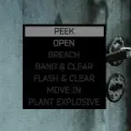
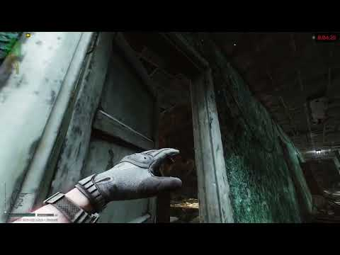
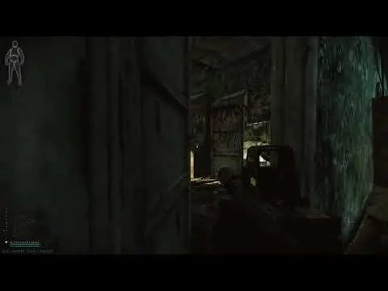

Expanded Door Interactions
- Downloads
- 5,509
- Favourites
- 0
This is my first client mod! Please report any bugs you encounter in the comments.
Expanded Door Interactions
What is it?
This mod adds more options to choose from when interacting with (almost) any door in the game, like peeking.
What features does it come with?
Right now, peeking and stealth opening. Peeking allows you to open a door about 3x less than normal, letting you get a look into the other room without immediately exposing yourself. You can use the gap or the door to throw/bounce grenades into the room while keeping yourself safe.

https://youtu.be/UIAXoWpsWY4?si=h_qG0ihI-Uhc8nBF
Stealth opening allows you to open the door slower and at a lower angle, similar to peeking, but you will make little to no noise and the door can be walked through. The animation of your PMC opening the door is also much quicker and much less “in your face” when using this option. This option is good for rats who like to either hide behind doors or people who want to make their enemies have less view into the other room.

Planned Features
- Peek and throw, which will force your character to use a grenade when peeking a door
- Peek and open (AKA “Open Further”), which will let you open peeked doors.
- Quick opening, which will open a door faster, causing it to open at a wider angle with a louder sound.
Known Issues
- The “Open Further” option appears in the config menu, but not in game. (Unintended but semi-intentional behavior. The option shouldn’t appear, but the config shouldn’t either.)
- Loot containers can be “peeked” (but it most likely won’t do anything)
- “Peek” is above “Open”, yet it is supposed to be under “Breach” or “Open”
This mod uses modified code from Open Sesame, as I did not know how to write the code myself due to me having no prior experience with client modding.
Version
1.0.2
Adds the “Stealth Open” feature. “Open Further” is now work in progress.